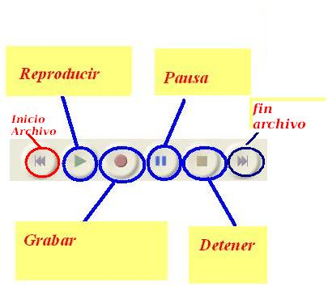
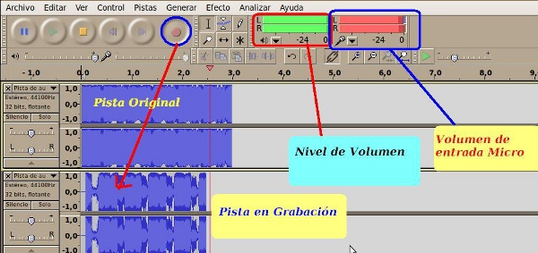

Edición de Audio y video
2.3.1 Control

La Barra de Herramientas de Control consta de seis iconos para el control del fichero de audio en edición
(ir al principio de la pista, reproducir, grabar, realizar una pausa
en la reproducción o grabación, parar la reproducción o grabación
y ir al final de la pista de audio).
Audacity cada vez que presionamos el botón de grabar lo realiza sobre una pista nueva. Cada
pista o toma corresponde a un fichero de audio. Ejemplo: en la pista 1
tenemos un fichero de música importado y, al darle a grabar, hacemos
una locución encima de la misma. Al finalizar el proceso tendremos un
fichero con sonidos superpuestos.

Jo.R.C.A. 2004 - 2011

Edición de Audio y Video con Software Libre by José Ramón Cerdeira Alonso is licensed under a Creative Commons Reconocimiento-No comercial-Compartir bajo la misma licencia 3.0 España License